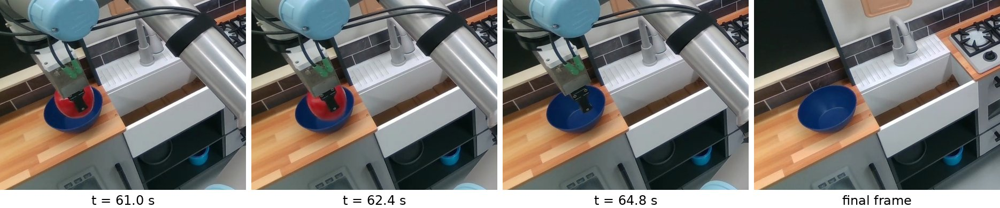
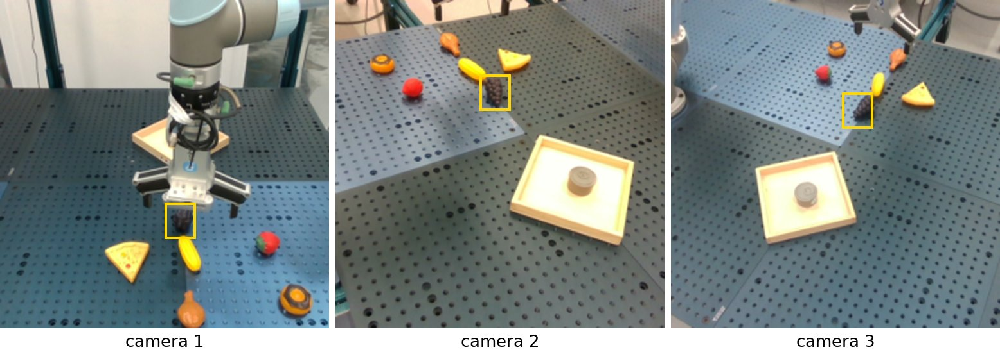

Executive Summary
로봇을 학습시키려면 시도마다 이번엔 성공인가라는 한 칸이 필요하다. 그 한 칸은 네 군데로 흘러간다. 정책을 학습시키는 보상, 학습 데이터를 거르는 필터, 정책끼리 비교하는 평가 점수, 그리고 다시 해볼지 말지를 정하는 재시도 신호. 롤아웃 수천 건을 사람이 다 볼 수는 없으니 최근 시스템은 이 판단을 비전-언어 모델에 맡기고, 그 답을 정답처럼 쓴다. 정작 그 판정자 자체가 얼마나 맞히는지는 파이프라인에 넣기 전에 거의 검증되지 않는다.
이번 주 공개된 프리프린트 하나가 그 판정자들을 처음으로 한 잣대에 올렸다. 서로 다른 연구팀이 따로 수집한 14개 출처 2,197건을 한 형식으로 묶고, 판정 모델 13종을 같은 프롬프트와 같은 입력 조건에서 채점했다. 최고 모델의 균형정확도가 0.77이다. 논문의 표현으로 네 번에 한 번 틀린다. 그리고 실패를 가려내라고 미세조정한 전용 검출기 다섯 개가 모두 자기 베이스 모델보다 낮게 나왔다. 어려움은 로봇이나 과제 종류가 아니라 무엇을 봐야 판정이 되는가로 갈렸다. 물체가 움직였는지로 결판나는 출처는 잘 맞히고, 부품이 실제로 맞물렸는지를 봐야 하는 조립에서는 어느 모델도 0.60을 넘지 못했다.
부록 한 절이 실무로 가장 곧장 이어진다. 어떤 전용 검출기가 자기 논문에 적은 성능 80.6%는, 그 검증셋의 79.7%가 실패라서 무조건 실패라고만 답해도 79.7%가 나오는 판 위의 숫자였다. 클래스를 맞춘 표본에 올리자 같은 모델이 0.533이 됐다. 자동 라벨러의 점수는 그 라벨러가 채점받은 판이 어떤 판이었는지를 빼고는 읽을 수 없다는 뜻이다. 다만 경계도 함께 읽어야 한다. 이 논문은 이틀 전 올라온 프리프린트고, 데이터와 코드는 공개하겠다고만 했을 뿐 아직 내려받을 수 없다. 가장 인용하기 좋은 애매하면 성공 쪽으로 기운다는 성향은 저자들이 오답을 손으로 읽어 본 관찰이며, 논문 스스로 통계적 주장이 아니라고 적어 두었다.
0.77
판정자 13종 중 최고 균형정확도
우연이 0.50인 척도에서, 논문 표현으로 네 번에 한 번 틀린다
0.52
접촉이 많은 조립의 13종 평균
이 슬라이스에서 0.60을 넘은 모델은 하나도 없었다
5종 전부
베이스보다 낮았던 전용 검출기
최대 낙폭 0.088점, 다만 다섯 쌍 중 둘은 사실상 동점
80.6 ↔ 79.7
공개 성능과 상시-실패 규칙의 점수(%)
무조건 실패라고만 답해도 79.7%가 나오는 검증셋이었다
로봇 학습에서 성공은 누가 적는가
로봇 정책 하나를 검증하려면 팔을 수백 번, 수천 번 움직여야 한다. 그렇게 남은 기록마다 사람이 한 칸을 채운다. 이번 시도는 성공인가. 이 칸은 영상이나 궤적처럼 크지 않고, 값도 둘 중 하나뿐이다. 그런데 이 한 칸이 로봇 학습 파이프라인에서 가장 여러 곳으로 흘러가는 값이다.
FailBench 논문은 이 라벨이 쓰이는 자리를 네 군데로 정리하고 각각에 인용을 붙인다. 강화학습에서 정책을 밀어 주는 보상이 되고, 학습 데이터를 남길지 버릴지 정하는 필터가 되고, 정책 두 개 중 어느 쪽이 나은지 매기는 평가 점수가 되고, 실패했으니 다시 해보라고 알려 주는 재시도 신호가 된다. 한 칸이 틀리면 네 갈래로 함께 틀린다.
정책을 한 번 돌려 얻은 시도, 곧 롤아웃을 사람이 하나하나 열어 보는 것은 비싸다. 그래서 최근 시스템은 이 판단을 비전-언어 모델(VLM)에 맡긴다. 영상과 과제 문장을 넣고 성공인지 실패인지를 묻는다. 논문이 짚는 문제는 그다음이다. 돌아온 답이 파이프라인 안에서 정답처럼 쓰인다. 저자들의 문장을 그대로 옮기면, 그 모든 용도에서 답은 정답으로 취급되며 판정자 자체의 품질은 파이프라인에 통합되기 전에 충분히 평가되는 일이 드물다.
논문은 실제 사례 두 건을 든다. AutoEval은 파이프라인 전체를 사람 평가와 맞춰 볼 뿐 그 안의 분류기를 따로 떼어 검증하지 않는다. WorldGym은 RT-1 라벨에서 GPT-4o의 균형정확도 0.89를 확인한 뒤, 그 판정자를 생성된 롤아웃 채점에 그대로 가져다 쓴다. 한 출처에서 잰 점수를 다른 데서 쓰는 순서가 이미 관행이 돼 있다는 뜻이다.
끝난 기록을 나중에 채점하는 것만이 방법은 아니다. 논문은 실패 검출기를 두 갈래로 나눈다. 한쪽은 정책 자체를 들여다본다. 정책의 은닉 상태나 행동 통계, 예측한 궤적에서 이상을 읽어 내는 계열이다. SAFE는 VLA의 은닉 상태에서 실패 점수 하나를 뽑고, Sentinel은 행동의 통계적 일관성 검사와 관측을 읽는 VLM을 함께 쓴다. 이 계열은 대부분 성공한 롤아웃만으로 보정하고 임계값을 컨포멀 예측으로 잡기 때문에 실패 데이터가 아예 필요 없다. 대신 정확도를 검출 시간과 맞바꾼다. 롤아웃이 도는 중에 멈추거나 다시 시키는 것이 목적이라서 그렇다. 그 대가로 특정 정책과 그 구조에 묶인다.
이 글이 다루는 판정자는 다른 쪽이다. 끝난 기록과 지시문만 받아 답하므로 정책이 무엇이든 로봇이 무엇이든 같은 판정자를 붙일 수 있다. 그 일반성이 쓸모인 동시에 문제의 핵심을 옮겨 놓는다. 만들어진 곳 밖으로 옮겨 붙였을 때도 맞히느냐가 이쪽에서는 부수적인 물음이 아니라 본 물음이 된다.
그럼 사람이 보면 되지 않느냐는 질문에도 논문은 자리를 하나 내준다. 실물 로봇 평가에서 사람이 판정하는 방식이 어떻게 운영되는지를 세 가지로 든다. RoboArena는 일곱 기관에 걸쳐 이중맹검 쌍대 비교를 돌리고, ManipulationNet은 제출된 실연을 중앙 위원회가 일일이 검증하고, ArmnetBench는 현장 운영자가 롤아웃마다 성공과 차선과 실패 중 하나를 매긴다. 품만 드는 것도 아니다. 논문이 인용하는 결과에 따르면 실물 정책 비교는 보통 20~30회 시행에 그쳐, 두 정책을 통계적으로 갈라내기에는 시행 수 자체가 모자란다. 판정을 모델에 넘기게 된 압력이 어디서 오는지가 여기 있다.
사람이 붙이면 어떻게 되는지는 우리가 이미 다룬 적이 있다. AgiBot World는 로봇이 헛손질한 구간까지 사람이 라벨링했다. 그 품이 얼마나 드는지를 알기에, 자동 판정자로 넘어가는 흐름 자체를 되돌리자는 이야기는 이 글의 관심사가 아니다. 물어야 할 것은 다른 쪽이다. 그 자동 판정자를 무엇으로 검증하고 승인할 것인가.
한 곳에서 모은 실패로는 실력을 잴 수 없다
실패 검출기를 채점하는 벤치마크는 이미 여럿 있었다. 문제는 그 대부분이 한 번의 수집 캠페인에서 나왔다는 데 있다. 로봇 한 대, 그리퍼 한 종류, 고정된 카메라 위치, 같은 장면, 같은 과제군, 같은 사람이 같은 기준으로 붙인 라벨. 여기서 잰 점수는 검출기의 실력과 그 캠페인의 성격이 섞인 값이고, 둘을 분리할 방법이 없다.
더 곤란한 것은 실패를 만들어 내는 관행이다. 시연을 흔들어 실패를 유도하거나, 오류를 자동 생성하거나, 실수를 연출하거나, 멀쩡한 성공 영상에 다른 지시문을 붙여 실패로 만든다. 논문의 지적은 여기서 날카로워진다. 그렇게 만든 실패는 만든 절차가 흔적을 남기고, 검출기는 그 흔적을 알아보는 것만으로 점수를 딸 수 있다. 물리 상태를 읽어서 맞힌 것인지, 제작 흔적을 외운 것인지 점수만 봐서는 구분되지 않는다.
범주가 섞여 들어가기도 한다. 기존 벤치마크 상당수는 실행 중에 생긴 오류와 계획 자체가 틀린 경우를 한 점수에 함께 담는다. 논문의 지적은 그 평균이 거의 풀린 문제와 아직 안 풀린 문제를 한데 뭉갠다는 것이다. FailBench가 범위를 좁힌 이유가 여기 있다. 이 벤치마크가 다루는 것은 실행 실패, 곧 시도한 동작이 의도한 결과를 내지 못했고 그 결과를 기록만 보고 판정할 수 있는 경우다. 하려던 동작이 실행 전부터 부적절했던 계획 실패는 대상이 아니다. 열네 출처를 가로질러 같은 질문을 던질 수 있는 것도 질문을 이만큼 얇게 깎았기 때문이다.
FailBench가 택한 방법은 새 데이터를 모으는 대신 이미 있는 기록을 가로지르는 것이다. 후보 코퍼스 30여 개를 훑어 14개 출처를 고르고, 각기 다른 카메라 구성과 라벨 관행을 한 형식으로 정규화한 뒤 2,197건을 남겼다. 실패 1,176건과 성공 1,021건. 그중 여섯 곳은 애초에 실패 검출용으로 만들어진 데이터가 아니었다. 원격조작 궤적의 품질을 매긴 RH20T, 접촉 조립의 모든 세그먼트에 라벨을 붙인 REASSEMBLE이 그렇다. 논문의 표현으로, 둘 다 실패 검출을 시험하려고 만든 것이 아니라서 끌어왔고 결과적으로 가장 어려운 슬라이스에 속하게 됐다.
고르는 규칙은 세 가지였다. 로봇이 조작 과제를 끝까지 수행한 기록일 것, 출처가 스스로 결과 라벨을 붙여 두었을 것, 그리고 이미 모인 것에 없는 과제군이나 로봇이나 실패 유형을 채울 것. 가운데 규칙에 저자들이 단서를 하나 붙인다. FailBench의 어떤 라벨도 저자들이 영상을 보고 내린 판단이 아니라는 것이다. 그러면 물려받은 라벨이 틀렸을 때는 어떻게 하는가. 벤치마크의 약 4분의 1을 무작위로 뽑아 사람이 검수하고, 라벨이 틀렸거나 애매한 표본이 나오면 같은 출처의 같은 분포에서 다른 표본으로 갈아 끼웠다. 전수 검수가 아니라 표본 검수다.
한 형식으로 정규화했다는 말 뒤에는 결정이 줄줄이 붙어 있다. 출처마다 라벨 체계가 달라 이진으로 옮기는 판단이 그때그때 필요했다. RH20T는 기록자가 0에서 9까지 품질 등급을 매기는데, 로봇 결함인 0과 과제 목표를 놓친 1을 실패로, 나머지를 성공으로 접었다. 더 눈여겨볼 것은 애매한 중간 등급을 어떻게 했는가다. armnetbench의 차선 등급, robometer의 부분 진행 등급, roboreward의 다섯 단계 품질 점수 중 4점이 모두 벤치마크에서 빠졌다. 4점을 뺀 이유를 논문은 완료에 가까워 애매하기 때문이라고 적는다. 적어도 이 세 출처에서는, 판정자가 채점받는 표본이 출처 스스로 애매하지 않다고 본 것들이라는 뜻이다.
아래 표에서 가장 눈에 띄는 열은 마지막 열이다. 가용 풀에서 얼마를 골라 썼는지가 출처마다 100배 넘게 벌어진다.
| 출처 | 실패의 발생 경로 | 가용 풀 | 채택 | 표집률 |
|---|---|---|---|---|
| reflect | 계획된 실패 | 30 | 30 | 100% |
| botfails | 계획된 실패 | 145 | 144 | 99.3% |
| ur5fail | 자연 발생 실패 | 140 | 139 | 99.3% |
| armnetbench | 자연 발생 실패 | 345 | 300 | 87.0% |
| robometer | 출처 불명 | 257 | 120 | 46.7% |
| phail | 자연 발생 실패 | 524 | 80 | 15.3% |
| simplerenv | 자연 발생 실패(시뮬) | 2,710 | 300 | 11.1% |
| bdv2fail | 합성 실패 | 1,000 | 100 | 10.0% |
| robofac | 계획된 실패 | 1,204 | 60 | 5.0% |
| roboreward | 합성 실패 | 2,831 | 100 | 3.5% |
| reassemble | 자연 발생 실패 | 4,551 | 124 | 2.7% |
| rh20t | 자연 발생 실패 | 12,625 | 300 | 2.4% |
| roboarena | 자연 발생 실패 | 10,783 | 100 | 0.9% |
| robometersim | 자연 발생 실패(시뮬) | 미기재 | 300 | 산출 불가 |
| 합계 | 14개 출처(실제 12·시뮬 2) | 37,145 | 2,197 | — |
▲ 논문 Table 5·6을 표집률 기준으로 재정렬한 것. 표집률은 본 리포트가 계산했다. robometersim의 가용 풀은 원 출처가 밝히지 않아 논문도 미기재로 두었다. 가용 풀은 출처마다 세는 단위가 다르다. rh20t는 장면, reassemble은 긴 기록 153편을 쪼갠 동작 세그먼트, botfails는 에피소드다. 논문이 직접 밝힌 단서도 둘 있다. rh20t 장면 154개와 botfails 에피소드 1개는 쓸 수 있는 이진 라벨이 없고, roboarena의 풀은 장면 짝을 맞추는 조건을 걸기 전에 센 수다. 그래서 roboarena의 0.9%는 다른 행과 같은 잣대의 표집률이 아니라 선택의 폭이 그만큼 넓었다는 표시로 읽어야 한다.
집계 방식 때문에 이 편차는 그냥 사정의 차이로 끝나지 않는다. 논문의 대표 지표인 매크로 평균은 슬라이스를 동등 가중한다. 가용 풀의 0.9%만 뽑아 온 roboarena와 전량을 쓴 reflect가 평균에서 같은 무게를 갖는다는 뜻이다. 슬라이스 하나가 30건짜리인 곳도 있으니, 소수 표본의 흔들림이 총점에 그대로 실린다. 벤치마크를 합치면 순위가 흔들린다는 것은 같은 연구소가 앞서 낸 감사에서도 확인된 바 있다.
RoboArena는 애초에 성공과 실패를 재는 벤치마크가 아니었다. 정책 두 개를 이중맹검으로 견주어 순위를 매기는 벤치마크였고, 평가자가 성공 여부를 함께 기록해 두었기에 FailBench가 이진 라벨로 재가공했다. roboreward 쪽 가용 풀 2,831건은 그 원 벤치마크의 테스트 분할과 정확히 같은 수다. 남겨 둔 시험지를 통째로 다시 쓴 셈이다.
논문의 우선권 주장에는 경계가 있다. 서론은 독립적으로 수집된 여러 출처를 한 프로토콜로 채점해 검출기를 견준 평가가 발표된 적 없다고 적는다. 다만 저자들 자신이 다음 절에서 반례를 하나 적어 둔다. PRIMO R1이 과정 추론을 학습한 뒤 RoboFail에 제로샷으로 옮겨 가 67%를 냈고, 그것이 자신들이 아는 유일한 교차 출처 결과라는 것이다. 즉 처음인 것은 여러 검출기를 여러 출처에 한 프로토콜로 동시에 올린 평가이지, 교차 출처 실험 자체가 아니다.
열세 종을 한 잣대에 올리니 최고가 0.77이었다
채점에 쓴 지표부터 짚어야 표를 읽을 수 있다. 균형정확도는 성공과 실패 각각의 재현율을 평균한 값이다. 두 클래스의 비율이 아무리 기울어 있어도 우연히 찍었을 때의 기대값이 0.50이 되도록 맞춘 척도라고 보면 된다. 실패가 열에 아홉인 데이터에서 일반 정확도를 쓰면 아무 생각 없이 실패라고만 답하는 규칙이 0.90을 받는다. 균형정확도에서는 같은 규칙이 정확히 0.50이다. 이 차이가 왜 실무에서 결정적인지는 다음 절에서 실제 숫자로 나온다.
평균을 내는 방식도 두 가지다. 매크로 평균은 슬라이스마다 점수를 내고 그 점수들을 동등 가중해 합친다. 마이크로 평균은 답한 표본을 전부 한 무더기로 모아 한 번에 계산한다. 논문은 매크로를 기준으로 비교한다고 밝힌다. 실패만 들어 있어 균형정확도가 정의되지 않는 reflect 슬라이스는 매크로에서 빠지고 마이크로에는 들어간다.
채점 조건은 하나로 묶여 있다. 모델마다 그 저자들이 권장한 프롬프트와 디코딩 설정, 추론 예산을 그대로 쓰되 묻는 질문과 채점 방식은 같다. 다만 판정자가 실제로 보는 화면은 출처를 따라간다. 영상을 받을 수 있는 모델에게는 영상을 그대로 넣고, 그렇지 못하면 클립에서 균등한 간격으로 정지 프레임 32장을 뽑아 넣는다. 출처 쪽도 고르지 않다. 대부분은 바깥에 고정된 카메라 한 대의 영상이지만 손목 카메라를 포함해 세 시점을 함께 주는 곳이 둘 있고, 아예 시작과 끝 프레임만 공개된 곳도 둘이다. 무엇이 보이느냐가 뒤에서 성적을 가르는 축이 되는데, 그 축의 조건이 출처마다 이미 다르다.
아래가 13종의 성적표다. 1위와 2위가 기준에 따라 자리를 바꾼다는 점을 함께 보아야 한다.
| 판정 모델 | 구분 | 매크로 | 마이크로 | 실제 | 시뮬 |
|---|---|---|---|---|---|
| Gemini 3 Flash | 범용 | 0.77 | 0.74 | 0.76 | 0.77 |
| Gemma-4-31B-it | 범용 | 0.75 | 0.76 | 0.75 | 0.76 |
| Qwen3-VL-8B-Thinking | 범용 | 0.69 | 0.69 | 0.68 | 0.75 |
| GPT-4o | 범용 | 0.69 | 0.67 | 0.69 | 0.68 |
| Qwen3-VL-4B-Thinking | 범용 | 0.65 | 0.65 | 0.64 | 0.71 |
| Guardian (thinking) | 전용 | 0.63 | 0.61 | 0.62 | 0.64 |
| RoboReward-8B | 전용 | 0.62 | 0.59 | 0.62 | 0.61 |
| Hy-Embodied-VLM-1.0 | 임바디드 | 0.61 | 0.62 | 0.61 | 0.64 |
| ViFailback-8B | 전용 | 0.59 | 0.56 | 0.60 | 0.54 |
| HY-Embodied-0.5 | 임바디드 | 0.54 | 0.53 | 0.54 | 0.54 |
| Qwen3-VL-2B-Thinking | 범용 | 0.53 | 0.53 | 0.52 | 0.55 |
| RoboFAC-7B | 전용 | 0.51 | 0.52 | 0.51 | 0.51 |
| FailSense-Calvin-3B | 전용 | 0.50 | 0.50 | 0.50 | 0.53 |
▲ 논문 Table 1. 균형정확도이며 우연 수준은 0.50이다. 매크로 기준 내림차순으로 정렬했다.
맨 윗줄이 0.77이다. 논문은 이 값을 대략 네 번에 한 번 틀리는 수준이라고 옮긴다. 판정자를 붙여 라벨 1,000개를 자동으로 채우면 200개 넘게 뒤집힌 채 다음 단계로 간다는 뜻이다. 2위 Gemma-4-31B-it은 매크로에서 0.75로 한 점 차이인데 마이크로에서는 0.76으로 앞선다. 기준을 밝히지 않은 1위 표기가 왜 위험한지를 보여 주는 자리다.
3.1전용으로 만든 다섯이 아래쪽에 모였다
표의 구분 열을 따라 읽으면 배치 하나가 도드라진다. 실패 검출용으로 미세조정한 전용 검출기 다섯 종이 모두 범용 VLM 아래에 있다. 논문의 문장은 조건을 하나 달고 있다. 모든 전용 검출기가 모든 범용 모델보다 낮되, 가장 작은 범용 모델은 예외다. 20억 파라미터급인 Qwen3-VL-2B-Thinking은 0.53으로, 전용 검출기 두 종보다는 위에 있지만 세 종보다는 아래에 있다. 로봇용으로 학습했다는 사실이 격차를 설명하지 못한다는 것이 저자들의 결론이지, 미세조정이 반드시 해가 된다는 주장은 아니다.
임바디드 로봇 작업용으로 만들어진 두 모델은 같은 구간에 앉는다. 여기서 한 가지는 우리 관찰로 덧붙여 둔다. 이 패널에는 2024년 5월에 나온 GPT-4o부터 2026년 7월에 공개된 Hy-Embodied-VLM-1.0까지 두 해에 걸친 모델이 섞여 있다. 논문은 세대 차이를 통제 변수로 다루지 않으므로, 표를 세대별 성능 비교로 읽으면 논문이 하지 않은 말을 하는 것이 된다.
3.2시뮬레이션에서 고르면 격차가 보이지 않는다
표의 마지막 두 열은 실제 로봇 기록과 시뮬레이션 기록을 갈라 매긴 점수다. 두 열의 순위는 거의 같다. 순위상관이 0.95로 나온다. 그런데 절대 수준이 다르다. 시뮬 쪽이 평균 1.3점 쉽고, 모델 간 분산도 더 작다. 저자들의 함의는 판정자를 고르는 절차에 곧장 걸린다. 시뮬레이션 환경은 성능 격차를 가리며, 거기서 고른 판정자가 실제 환경에 배치됐을 때 같은 성능을 낸다는 보장이 없다. 판정자를 시뮬에서 시험해 보고 실제 라인에 붙이는 순서는 흔하다.
80.6%는 어디서 온 숫자였나
부록 D는 전용 검출기 하나가 자기 논문에 적어 낸 성능이 어디서 나온 숫자인지를 나눗셈 세 줄로 되짚는다. 대상은 RoboFAC-7B이고, 그 논문이 보고한 값은 자기 검증셋에서의 일반 정확도 80.6%다.
그 검증셋의 구성이 먼저다. 1,204건 가운데 실패가 960건이다. 비율로 79.7%다. 그러면 영상을 보지도 않고 전부 실패라고만 답하는 규칙이 그 판에서 79.7%를 받는다. 보고된 80.6%는 그보다 0.9%p 위에 있는 값이었다.
FailBench는 같은 데이터에서 실패 30건과 성공 30건을 뽑아 클래스를 맞춘 뒤 같은 모델을 다시 올렸다. 실패는 30건을 모두 잡았다. 성공은 30건 중 2건을 맞혔다. 두 재현율을 평균한 균형정확도가 0.533이다. 마지막 줄이 앞뒤를 잇는다. 이 두 재현율을 원래의 불균형한 분포로 되돌려 계산하면 0.811이 나오고, 이는 그 논문이 보고한 0.806과 0.5%p 차이다. 같은 모델, 같은 행동, 서로 다른 판이다.
이 산술은 이 파이프라인에서 두 번 독립적으로 검산했고 오차가 없었다. 여기서 나오는 실무 규칙은 간단하다. 자동 라벨러의 성능 수치를 받으면, 그 수치를 만든 검증셋에서 다수 클래스의 비율부터 계산한다. 보고된 점수가 그 비율 바로 위라면, 그 점수는 도구의 실력보다 판의 구성을 더 많이 담고 있다. 설계 자체가 성능을 부풀리는 구조는 같은 산모의 기록을 학습과 시험에 갈라 담은 의료 벤치마크에서도 본 적 있다. 같은 병의 다른 증상이다.
4.1같은 조건에 세우니 다섯 쌍이 모두 같은 방향이었다
공개 점수를 각자의 조건에서 읽는 대신, 조건을 통일해 놓고 미세조정 전과 후를 견주는 방법도 있다. 저자들은 전용 검출기 다섯 종을 각자가 출발점으로 삼은 베이스 모델과 같은 프롬프트, 같은 디코딩, 같은 입력 조건에서 나란히 돌렸다. 결과는 다섯 쌍 모두 같은 방향이다.
| 전용 검출기 | 베이스 모델 | 전용 | 베이스 | 차이 |
|---|---|---|---|---|
| ViFailback-8B | Qwen3-VL-8B-Instruct | 0.587 | 0.675 | −0.088 |
| RoboReward-8B | Qwen3-VL-8B-Instruct | 0.619 | 0.675 | −0.057 |
| RoboFAC-7B | Qwen2.5-VL-7B-Instruct | 0.514 | 0.555 | −0.040 |
| FailSense-Calvin-3B | PaliGemma2-3B | 0.503 | 0.506 | −0.003 |
| Guardian (thinking) | InternVL3-8B | 0.627 | 0.629 | −0.002 |
▲ 논문 Table 7. 두 클래스를 모두 가진 13개 슬라이스의 매크로 평균이며, 낙폭이 큰 순서로 정렬했다.
이 방향에는 단서가 둘 붙는다. 아래 두 쌍은 차이가 0.003 이내라 동점으로 읽어야 한다. 그리고 그 동점조차 조건을 달고 있다. Guardian이 베이스와 비긴 것은 자기 홈 데이터셋 두 곳에서 크게 이겼기 때문이고, 그 둘을 빼면 0.596 대 0.639로 벌어진다. 다만 반대 방향의 사례도 있다. Guardian은 자기 홈이 아닌 robofac 슬라이스에서도 베이스를 크게 앞선다. 홈에서만 이긴다는 요약은 매크로 평균에는 맞아도 슬라이스 낱개에는 맞지 않는다.
논문의 결론 문장은 조심스럽다. 실패 검출용 미세조정이 학습에 쓴 데이터 밖에서는 모델을 더 나쁘게 만들 수 있다는 것이다. 왜 그런지를 밝힌 실험은 이 논문에 없다. 앞 절에서 본 사정이 정황 근거가 될 뿐이다. 전용 검출기들이 학습한 데이터는 대개 한 번의 수집 캠페인에서 나왔고, 그중 상당수는 실패가 인위적으로 만들어진 것이었다.
4.2저자들이 반대쪽도 먼저 적어 두었다
Guardian의 공개 점수는 저자들의 파이프라인에서 재현됐다. UR5FAIL에서 0.741로 공개된 0.77에 근접했고, BDV2FAIL에서는 0.850으로 공개된 0.85와 사실상 일치했다. 재현되는 공개 점수도 있다는 뜻이다.
저자들은 ViFailback 쪽에도 선을 긋는다. 그 검증 분할은 실패 445건에 성공 55건이라 상시-실패 규칙이 0.890을 얻는 판이고, 그 논문이 베이스 모델에 보고한 값은 0.900이다. 그런데 저자들은 이것을 재현이라 부르지 않고 사전 점검이라고 못 박았다. FailBench에 ViFailback의 홈 데이터셋이 들어 있지 않아 같은 조건으로 다시 재 볼 수가 없기 때문이다.
RoboFAC 쪽 사례는 양쪽을 한 번에 보여 준다. 원 논문은 자기 평가 벤치마크에서 GPT-4o를 34.1%p 앞섰다고 보고했고, 실제 로봇 파이프라인에 감독자로 붙였을 때 네 과제 평균 29.1%의 상대 개선을 얻었다고 적었다. 같은 모델이 FailBench에서는 매크로 0.51이고, 자기가 출처인 robofac 슬라이스에서도 0.53이다. 두 숫자가 모순은 아니다. 자체 벤치마크의 종합 점수와 교차 출처 균형정확도는 서로 다른 것을 재는 값이다. 다만 앞의 숫자만 보고 도구를 고르면 뒤의 숫자를 만나게 된다.
마지막으로 이 대조를 시장 경쟁으로 읽지 않아야 한다. 평가당한 전용 검출기 다섯 종 가운데 최소 넷은 대학 연구실에서 나온 결과물이다. Guardian은 프랑스 학계의 WILLOW 계열, RoboReward는 스탠퍼드와 UC 버클리, FailSense는 소르본, RoboFAC은 상하이교통대다. 겨룬 것은 상품들이 아니다. 서로 다른 최적화 목표가 한 잣대 위에 올라왔을 뿐이다. 한편 FailBench를 만든 메트릭 AI 랩(Metric AI Lab)은 대학이 아니라 회사이고, 자사 연구 분야로 로봇 실패 검출과 벤치마크 과학을 내걸고 있으며 실패 검출 도구를 따로 개발하고 있다. 논문에는 이해상충이나 자금 출처를 밝힌 진술이 없다. 다만 평가된 13종에 이 회사의 모델은 하나도 없고, 부록까지 산술을 공개해 제3자가 검산할 수 있게 해 두었다. 누가 쟀는지를 알고 읽으면 될 일이다.
닿았는지를 눈으로 판정할 수 있는가
14개 출처를 한 잣대에 올려 놓으면 어느 조건에서 판정이 어려워지는지를 볼 수 있다. 로봇 기종으로 갈릴 수도 있고, 과제의 난도로 갈릴 수도 있다. 실제로 갈린 축은 그 둘이 아니었다.
위쪽 끝과 아래쪽 끝을 비교하면 축이 보인다. 가장 잘 맞히는 robofac은 계획된 실패를 담은 원격조작 기록이고, 실패의 결과가 물체의 위치로 드러난다. 잘못된 물건을 집었거나 엉뚱한 곳에 놓았으면 화면에 남는다. 가장 어려운 reassemble은 NIST 태스크보드, 그러니까 조립 정밀도를 재려고 만든 표준 시험판 위에서 부품을 끼우고 돌리는 접촉 조립 기록이다. 13종 평균이 0.52이고, 이 슬라이스에서 0.60을 넘은 모델은 하나도 없었다. 최고가 정확히 0.60이다.
둘을 가르는 것은 로봇도 과제의 어려움도 아니다. 판정에 필요한 시각 증거의 종류다. 물체가 움직였는지는 넓은 화면에서도 읽힌다. 부품이 실제로 맞물렸는지는 작업 공간 전체를 담은 프레임에서 아주 작은 영역을 읽어야 알 수 있고, 각도가 조금만 틀어져도 끼운 것처럼 보인다. 왜 어려운지에 대해 논문은 단정하지 않는다. 태스크보드에 대한 사전 지식이 필요하거나 작은 부품을 다루는 정밀도 자체가 문제일 수 있다는 가설로 적어 둔다. 접촉이 걸린 작업에서 채점이 무너지는 현상은 휴머노이드가 달리기는 이겨도 못은 못 박은 대회에서도 나타났다. 이번에 새로운 것은 같은 경계가 판정자 쪽에서도 나타난다는 점이다.
이 축은 어디서 나온 것인가. 슬라이스마다 점수가 갈린다는 것은 표에서 잰 값이다. 그런데 정확도가 로봇 기종이나 그 구성과 연관되지 않는다는 진술, 그리고 집기나 놓기나 밀기 같은 과제 종류와도 연관되지 않는다는 진술은 저자들이 오답을 손으로 읽어 본 부록의 검토에서 나온다. 그 검토가 읽어 낸 구분은 이렇다. 엉뚱한 물건을 집었다거나 색이 다른 것을 집었다처럼 의미로 드러나는 실패는 대체로 잡아내고, 놓는 자리가 어긋났다거나 턱이 허공에서 닫혔다거나 쥔 것이 미끄러졌다처럼 물리로 드러나는 실패는 대체로 놓친다. 저자들은 이 구분을 표본에 라벨로 달지 않았고 출처들이 공통 실패 분류 체계를 갖고 있지 않아 세어 볼 수도 없었다고 밝힌다. reassemble처럼 이미 여덟 가지 실패 유형을 달아 둔 출처가 있는데도 이번에는 표집과 오답 검토에만 썼다. 모든 표본을 하나의 분류 체계로 다시 달아 채점하는 것이 다음 확장이라고 적어 둔 이유다.
논문이 스스로 적은 한계 하나가 여기에 겹친다. FailBench의 모든 수치는 시각 입력과 지시문에서만 나왔다. 그런데 출처 네 곳은 이미 힘-토크나 오디오를 기록하고 있다. 가장 어려운 슬라이스들이 접촉 신호를 갖고 있는데도 벤치마크는 그것을 쓰지 않았다는 뜻이다. 저자들은 이 사실을 감추지 않고 한계 절에 적었다. 닿았는지를 눈으로만 판정하게 해 놓았다는 이야기이지, 접촉 판정이 원래 불가능하다는 이야기가 아니다.
5.1오답이 서로 겹치지 않는다
모델마다 틀리는 표본이 다르다. 78개 모델 쌍에 대해 오답 집합의 겹침 비율을 재 보면 평균이 0.28이다. 겹침이 가장 큰 쌍은 0.82인데, 저자들은 이 값을 실력의 일치로 읽지 말라고 한다. RoboFAC-7B와 ViFailback-8B는 입력과 거의 무관하게 실패라고 답하는 모델들이라 거의 같은 성공 사례에서 틀린다. 공유된 편향이지 공유된 지각이 아니라는 것이 원문의 표현이다. 이 둘을 빼고 나면, 나머지 열한 종이 전부 틀린 표본은 59건뿐이다.
그렇다면 여러 모델을 합치면 되지 않을까. 상위 세 종의 다수결은 단일 최고 모델보다 약 2점을 얻는다. 대신 판정 한 건마다 모델을 세 번 돌리므로 평가 비용이 약 3배가 된다. 그리고 접촉이 많은 조립에서는 다수결도 0.55에 그친다. 아무도 못 보는 것은 셋이 모여도 못 본다. 여러 판정과 증거를 어떻게 합칠 것인가는 증거를 세는 방식 자체를 다룬 앞선 글의 주제였고, 이 결과는 그 글의 결론과 같은 방향을 가리킨다. 같은 것을 보는 판정을 여러 번 세어도 증거는 늘지 않는다.
5.2애매할 때 어느 쪽으로 기우는가
이 대목이 이 글에서 가장 널리 인용될 만한 관찰이다. 그만큼 근거 등급을 먼저 밝혀야 한다. 이 내용은 저자들이 오답 사례를 손으로 읽어 본 부록의 소절에서 나온다. 그 절의 첫 문단이 직접 적는다. 검토는 고정된 절차 없이 진행됐고 오류의 일부만 다뤘으며, 이 소절의 어떤 것도 통계적으로 뒷받침된 주장이 아니다. 읽은 트레이스는 대부분 Gemma-4-31B-it 한 모델의 것이고, 한계 절은 이 메커니즘이 그 한 모델에서 확인됐을 뿐 나머지 패널에 대해서는 보여진 것이 아니라 가정된 것이라고 적는다. 13종 전체에서 측정된 체계적 편향이 아니라는 뜻이다.
그 위에서 읽으면 사례들은 선명하다. 무너진 쌓기 시도를 두고 모델의 트레이스는 실패라고 믿을 이유가 있는가, 없다고 적고 닫힌다. 서랍 앞에 놓인 장난감을 두고는 서랍 안인가 아니면 그냥 서랍 앞인가라고 물은 뒤 답하지 않는다. 사과를 그릇에 담는 에피소드에서는 사과가 63초쯤 그리퍼에서 떨어져 그릇에 한 번도 닿지 않고 이후 모든 프레임에서 그릇이 비어 있는데, 모델의 검증 단계가 사과가 그릇 안에 분명히 보인다고 적고 성공으로 답했다. 포도 사례에서는 그리퍼의 턱이 한 번도 닫히지 않았다. 카메라 한 대에서는 쥔 것처럼 보이고 나머지 두 대에서는 탁자 위에 그대로인데, 세 시점이 전부 모델에 들어갔는데도 성공이라고 답했다.


검토가 짚은 어긋남은 둘 더 있다. 하나는 결과 대신 접근을 채점하는 것이다. 볼트를 구멍까지 옮겨 반쯤 돌린 장면을 삽입이 끝났다고 부른다. 다른 하나는 장면이 애초에 그 목표를 허용하는 상태인지 확인하지 않는 것이다. 녹화 내내 엎어져 있는 그릇, 입구를 가로질러 놓인 칼을 그대로 두고도 통과시킨다. 지시받은 동작이 수행됐는지는 보되 그 동작이 놓인 세계가 그 결과를 낼 수 있는 상태인지는 보지 않는다.
저자들의 종합은 한 문장이다. 실패가 입증해야 할 쪽에 놓인다. 애매함은 대개 카메라가 놓인 각도에서 오거나 성공 기준이 덜 정해진 데서 오는데, 모델은 그 애매함을 성공 쪽으로 푼다는 것이다. 이 절에서 저자들이 실제로 세어 본 값은 하나다. Gemma-4-31B-it의 오답 추론 트레이스가 정답 트레이스보다 길다. 평균 1,868자 대 1,464자이고 중앙값도 같은 방향이다. 논문의 결론은 거기까지다. 어려운 표본에 추론을 너무 적게 써서 틀린 것은 아니라는 것. 추론량을 늘려 보는 개입 실험은 이 논문에 없다. 추론 예산은 각 모델 저자가 권장한 값으로 고정돼 있었다.
텍스트를 채점하는 LLM 심판에도 같은 공백이 있다. 널리 쓰이지만 잘 검증되지 않는다는 점에서 그렇다. 다만 편향의 종류가 다르다. 논문이 직접 적듯 텍스트 심판의 편향은 위치와 장황함과 자기선호이고, 여기서 문제가 되는 것은 물리 상태다. 채점 척도의 설계가 만들어 낸 편향과 달리, 이쪽은 프롬프트를 다듬어 고칠 수 있는 문제가 아니다. 카메라가 그 장면을 담지 못했다면 판정자는 볼 수 없는 것을 판정하고 있는 셈이다.
모델을 바꾸기 전에 화면을 바꾼다
진단이 증거 유형에서 갈렸다면 처방도 그쪽에서 나온다. 저자들이 마지막에 시험한 것은 더 좋은 판정 모델이 아니라 판정자에게 보내는 화면이다. Gemini 3 Flash에게 4프레임과 과제 문장만 주고 결과가 드러날 영역을 사각형 하나로 지정하게 한 다음, 그 영역만 잘라 다시 같은 모델에게 판정을 맡겼다. 영역을 지정하는 쪽은 정답을 보지 못한다. 고정 카메라 화면만 자르고 손목이나 이동 카메라는 통째로 보낸다. 자를 고정 화면이 없는 31건은 이 실험에서 빠졌다.
매크로 평균이 0.773에서 0.797로 올랐다. 재학습 없이 2.3점이다. 그런데 이 표를 아래까지 읽어야 한다. 열네 개 슬라이스 가운데 넷은 오히려 떨어졌다.
| 슬라이스 | 표본 | 원본 화면 | 잘라낸 화면 | 차이(점) |
|---|---|---|---|---|
| simplerenv | 300 | 0.693 | 0.800 | +10.7 |
| roboarena | 100 | 0.740 | 0.810 | +7.0 |
| robometer | 120 | 0.850 | 0.900 | +5.0 |
| rh20t | 300 | 0.655 | 0.701 | +4.6 |
| ur5fail | 139 | 0.828 | 0.857 | +2.9 |
| botfails | 144 | 0.667 | 0.694 | +2.8 |
| reassemble | 124 | 0.567 | 0.591 | +2.3 |
| armnetbench | 300 | 0.723 | 0.743 | +2.0 |
| roboreward | 69 | 0.840 | 0.860 | +2.0 |
| robofac | 60 | 0.933 | 0.950 | +1.7 |
| robometersim | 300 | 0.857 | 0.837 | −2.0 |
| bdv2fail | 100 | 0.780 | 0.740 | −4.0 |
| phail | 80 | 0.918 | 0.873 | −4.5 |
| reflect† | 30 | 0.567 | 0.500 | −6.7 |
| 매크로 전체 | — | 0.773 | 0.797 | +2.3 |
▲ 논문 Table 4. Gemini 3 Flash가 영역 지정과 판정을 모두 맡은 파이프라인이며, 손목 카메라만 있는 31건은 제외됐다. reflect†는 실패만 들어 있어 실패 재현율로 채점된다.
순증만 보면 한 가지를 놓친다. 이 파이프라인은 223건을 고치고 160건을 망쳤다. 순증은 63건이고, 정확 McNemar 검정으로 p는 0.0015다. 통계적으로는 분명한 개선이되 양방향 변화가 그만큼 크다는 뜻이다. 잘라 넣으면 좋아진다는 요약은 절반만 옮긴 것이다.
부록의 어블레이션은 공을 누구에게 돌릴지도 정리해 둔다. 같은 영역 상자를 그대로 두고 판정자만 바꾸면 simplerenv의 이득이 사라진다. 잘 그린 상자는 그것을 읽을 수 있는 검출기가 있을 때만 값을 하고, 강한 검출기도 잘못 그려진 상자를 구해 내지는 못한다는 것이 저자들의 정리다. 잘라내는 방식 자체도 크게 중요하지 않았다. 상자 밖을 검게 가리는 것이 잘라내는 것과 거의 같은 효과를 냈고, 잘라낸 조각을 확대해 봐야 얻는 것이 없었다. 저자들의 문장이 이 절의 한계를 그대로 말한다. 이 가운데 어느 것도 모델에게 접촉 상태를 읽는 법을 가르치지 않는다. 하는 일은 볼 필요가 없는 것을 치워 주는 것뿐이다.
6.1판정자를 붙이기 전에 여섯 단계를 밟는다
여기까지의 결과를 도입 검토 절차로 옮기면 여섯 단계가 된다. 앞의 둘은 모델을 한 번도 돌리지 않고 할 수 있고, 뒤로 갈수록 품이 든다.
첫째
받은 성능 수치가 어떤 검증셋에서 나왔는지 묻고, 그 검증셋의 성공과 실패 비율을 센다. 비율을 알려 주지 않는 성능표는 읽을 수 없는 성능표다.
둘째
그 비율로 상시 한쪽 답변의 점수를 계산해 본다. 나눗셈 한 번이다. 보고된 점수가 그 값 바로 위라면 실력이 아니라 판의 구성을 보고 있는 것이다.
셋째
그 도구가 학습하거나 검증에 쓴 데이터 밖에서 한 번 더 잰다. 우리 현장 기록 100건이면 충분하다. 클래스는 반드시 맞춰서 뽑는다.
넷째
점수를 증거 유형으로 쪼갠다. 물체가 움직였는지로 판가름 나는 과제와 접촉이 성립했는지를 봐야 하는 과제를 갈라 따로 집계한다.
다섯째
판정자에게 실제로 들어가는 화면을 사람이 눈으로 본다. 결과가 드러나는 영역이 몇 픽셀인지, 그 순간이 프레임에 남아 있기는 한지를 확인한다.
여섯째
오답의 추론 트레이스를 표본으로 읽는다. 어느 쪽으로 기울어 틀리는지는 총점에 나오지 않고, 실패를 성공으로 적는 오류와 그 반대는 하류 비용이 다르다.
이 절차에도 닿지 않는 범위가 있다. FailBench가 다루는 라벨은 실행이 끝난 기록에 붙는 이진 라벨 하나뿐이다. 나쁜 계획을 미리 잡아내는지, 실패를 예측하는지, 어떤 종류의 실패인지 이름 붙이는지, 진행도를 재는지에 대해서는 아무것도 말하지 않는다. 저자들의 표현으로 이 라벨은 기록이 담을 수 있는 가장 얇은 라벨이고, 그래서 14개 출처를 가로지를 수 있는 동시에 그 점수로 말할 수 있는 것의 한계도 거기서 정해진다. 로봇 구성도 한쪽에 쏠려 있다. 전부 평행 그리퍼를 단 탁상 팔이고 양팔 기록은 98건뿐이며 휴머노이드와 이동 조작, 다지 핸드는 들어 있지 않다.
지금 이 벤치마크를 직접 돌려 보기도 어렵다. 초록은 FailBench와 평가 도구를 공개한다고 적지만, 2026년 9월 5일 조회 시점의 프로젝트 홈페이지는 코드와 데이터셋, 리더보드가 전부 준비 중이다. 논문 자체도 9월 3일에 올라온 v1 프리프린트라 동료심사 정보가 없다. 지금 가져다 쓸 수 있는 것은 데이터가 아니라 방법과 산술이다. 부록까지 공개돼 있어 위의 여섯 단계는 우리 데이터에 그대로 옮길 수 있다.
라벨이 틀리면 그다음에 무슨 일이 생기는가. 여기서 한 가지를 분명히 해야 한다. 이 논문은 오염된 라벨로 정책을 학습시켜 성능이 떨어지는 것을 보인 적이 없다. 잰 것은 판정자의 정확도까지다. 그 연결은 우리가 인접한 근거로 세우는 것이고, 잘 고른 데이터가 정책 성능으로 이어지지 않은 앞선 사례가 그 근거에 해당한다. 라벨 한 칸의 오류가 정책까지 몇 단계를 거쳐 흘러가는지는 아직 아무도 정량으로 재지 않았다.
페블러스 관심의 이유
AI-Ready Data는 모델이 먹을 수 있는 형태를 다룬다. 로봇 데이터에서 그 형태의 마지막 한 칸이 성공과 실패를 적는 라벨이다. 궤적과 영상과 센서 로그가 아무리 잘 정리돼 있어도 이 칸이 틀리면 그 시도는 보상으로도, 필터로도, 평가 점수로도 잘못 쓰인다. 지금 이 칸을 채우는 주체가 사람에서 모델로 넘어가는 중이다. 그렇다면 데이터를 진단하는 쪽의 대상 목록에 데이터만이 아니라 그 라벨을 만든 도구가 들어가야 한다. DataClinic이 데이터셋을 열어 볼 때 라벨의 출처가 사람인지 시뮬레이터의 판정 규칙인지 VLM인지를 함께 묻는 이유가 여기 있다.
품질 담당자에게 이 논문이 주는 가장 값진 대목은 순위표가 아니라 부록 D다. 어떤 도구가 80.6%라고 적어 왔을 때, 그 숫자를 만든 검증셋의 79.7%가 실패였다면 아무 판단도 하지 않는 빈 규칙이 79.7%를 받는다. 점수는 도구의 실력만 담고 있지 않다. 채점판의 구성을 함께 담고 있다. 품질이 값의 정확성인 동시에 그 값을 만든 절차의 검증 가능성이라는 명제가, 여기서는 자동 라벨러의 점수는 그 라벨러가 채점받은 판을 빼고는 읽을 수 없다는 문장으로 번역된다.
두 번째로 이 논문이 보여 준 것은 같은 도구라도 자기 홈 데이터셋 밖으로 한 발만 나가면 값이 달라진다는 것이다. 전용 검출기 다섯 종이 모두 그랬고, 그중 베이스와 비긴 모델조차 홈 두 곳을 빼면 격차가 벌어졌다. 벤더가 가져온 성능표를 우리 현장에서 다시 재야 하는 이유가 이 한 줄이다.
실무로 옮길 때 좋은 점은 시작 지점이 가볍다는 것이다. 검증셋의 클래스 비율은 모델을 돌리지 않고도 셀 수 있고, 상시 한쪽 답변의 점수는 나눗셈 한 번이다. 그 두 숫자만으로도 받아 든 성능표의 절반은 읽힌다. 그다음이 홈 데이터셋 밖 교차 검증이고, 그다음이 증거 유형별 분해다. 물체가 움직였는지로 판가름 나는 과제와 접촉이 성립했는지를 봐야 하는 과제는 같은 도구로도 0.72와 0.52로 갈렸다. 우리 작업이 후자에 가깝다면 벤더의 평균 점수는 우리 현장을 설명하지 않는다.
지금 로봇 데이터 판에서 라벨 품질은 활발히 논의된다. 라벨러 품질은 그렇지 않다. 논문의 표현대로 판정자 자체의 품질은 파이프라인에 통합되기 전에 충분히 평가되는 일이 드물다. 무엇을 먹일 것인가가 데이터의 구성을 다뤘고 성공률 하나로는 보이지 않는 것이 지표의 한계를 다뤘다면, 이 글이 선 자리는 그 사이다. 데이터를 재는 도구 자체를 무엇으로 재는가. 라벨을 만드는 도구에도 라벨과 같은 급의 검증 절차가 필요하다는 것이 이 논문에서 가져올 한 문장이다.
참고문헌
1차 사료
- 1.Navasardyan, Z., Danielyan, T., & Davtyan, H. (2026). FailBench: How Reliable are VLMs at Judging Robot Task Success? arXiv:2609.03611v1 [cs.RO], 2026-09-03. (이 글의 1차 출처. 본문 §1~§7, 부록 A~D 전부)
- 2.Metric AI Lab. FailBench 프로젝트 홈페이지. 2026-09-05 확인. (코드·데이터셋·리더보드 모두 준비 중 상태)
- 3.Metric AI Lab. metricailab.com. 2026-09-05 확인. (연구 분야로 내건 로봇 실패 검출·벤치마크 과학, 자체 실패 검출 도구 개발 현황)
평가된 전용 검출기 다섯 종
- 4.Pacaud, T., Garcia, R., Chen, S., & Schmid, C. (2025). Guardian. arXiv:2512.01946. (프랑스 학계 WILLOW 계열. ur5fail·bdv2fail 두 출처의 원 논문이기도 하다)
- 5.Lee, T., Wagenmaker, A., Pertsch, K., Liang, P., Levine, S., & Finn, C. (2026). RoboReward. arXiv:2601.00675. (스탠퍼드·UC 버클리. roboreward 출처의 원 논문)
- 6.Zeng, W., et al. (2025). ViFailback. arXiv:2512.02787. (검증 분할이 실패 445건·성공 55건. 본 리포트는 이 논문의 소속·규모를 확인하지 못해 본문에 쓰지 않았다)
- 7.Lu, W., Ye, X., Ye, J., Tao, Y., Yang, S., & Zhao, H. (2025). RoboFAC: A Comprehensive Framework for Robotic Failure Analysis and Correction. arXiv:2505.12224. (상하이교통대 중심. 실패 궤적 9,440건·QA 78,623쌍, 자체 벤치마크에서 GPT-4o 대비 34.1%p, 실제 파이프라인 삽입 시 네 과제 평균 29.1% 상대 개선)
- 8.Grislain, C., Rahimi, H., Sigaud, O., & Chetouani, M. (2025). I-FailSense. arXiv:2509.16072. (소르본 ISIR. FailBench 표기는 FailSense-Calvin-3B)
출처 데이터셋 (본문에서 이름을 부른 것)
- 9.Fang, H.-S., et al. (2024). RH20T. arXiv:2307.00595, ICRA 2024. (약 11만 원격조작 궤적. RGB-D와 6축 힘-토크, 오디오를 함께 수집한다)
- 10.Sliwowski, D., et al. (2025). REASSEMBLE. arXiv:2502.05086, RSS 2025. (NIST Assembly Task Board 1 기반 접촉 조립, 4,551개 세그먼트 중 실패 516건. 이벤트 카메라·힘-토크·마이크를 함께 기록한다)
- 11.Atreya, P., et al. (2025). RoboArena. arXiv:2506.18123, CoRL 2025. (7개 기관·7개 정책·600여 에피소드. 원 설계는 이중맹검 쌍대 순위 비교다)
- 12.Selvaraj, N. M., et al. (2026). armnetbench. arXiv:2607.24481. (SO-101 단일팔·양팔 12과제. 메트릭 AI 랩 홈페이지가 언급하는 아마존 ARMBench와는 다른 데이터셋이다)
- 13.Liu, Z., et al. (2023). REFLECT: Summarizing Robot Experiences for Failure Explanation and Correction. (RoboFail의 공개 실제 로봇 부분이 FailBench의 reflect 슬라이스)
판정 모델 (본문에서 제원을 밝힌 것)
- 14.Google DeepMind (2025). Gemini 3 Flash 모델카드. 2025-12-17. (13종 중 매크로 1위)
- 15.Gemma Team (2026). Gemma 4 Technical Report. arXiv:2607.02770. (31B 밀집, Apache 2.0, 모델 공개 2026-04-02)
- 16.Bai, S., et al. (2025). Qwen3-VL Technical Report. arXiv:2511.21631. (2B·4B·8B Thinking 세 크기가 패널에 포함)
- 17.OpenAI (2024). GPT-4o System Card. arXiv:2410.21276. (2024년 5월 공개, 패널에서 가장 오래된 모델)
- 18.Wang, Y., et al. (2026). Hy-Embodied-VLM-1.0. arXiv:2607.12894. (텐센트. 패널에서 가장 최근 모델)
페블러스 선행 글
- 19.페블러스 (2026). 로봇의 헛손질까지 라벨링한 데이터셋. 2026-06-22.
- 20.페블러스 (2026). 피지컬 AI 벤치마크 두 쌍을 합치자 모델 22개가 흔들렸다. 2026-08-28.
- 21.페블러스 (2026). 같은 산모의 기록을 갈라 담아 부풀린 성능. 2026-08-21.
- 22.페블러스 (2026). 증거를 세는 방식이 결론을 바꾼다. 2026-09-04.
- 23.페블러스 (2026). 채점 척도가 만들어 낸 LLM 심판의 바닥. 2026-08-29.
- 24.페블러스 (2026). 휴머노이드가 달리기는 이겨도 못은 못 박았다. 2026-08-30.
- 25.페블러스 (2026). 완벽한 데이터를 섞었는데 로봇은 더 나빠졌다. 2026-07-17.
- 26.페블러스 (2026). 로봇에게 무엇을 먹일 것인가. 2026-08-01.
- 27.페블러스 (2026). 성공률은 되찾았는데 지운 시연의 흔적은 남았다. 2026-08-25.